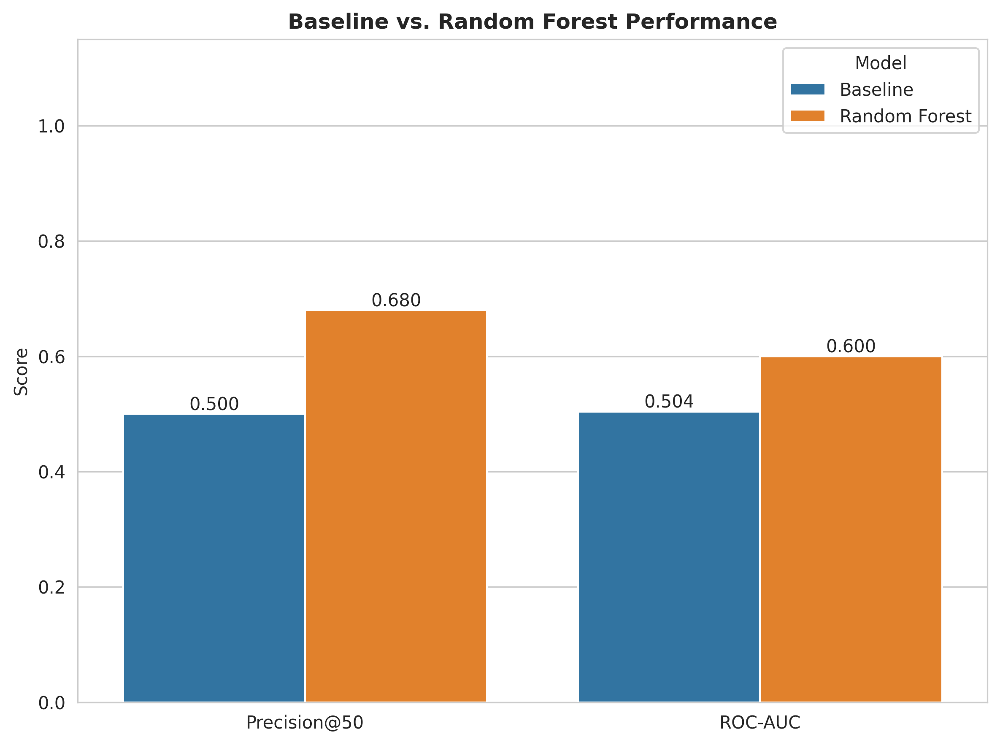
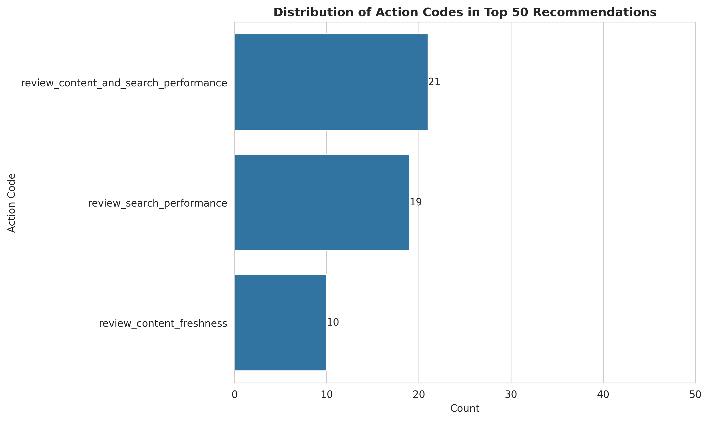
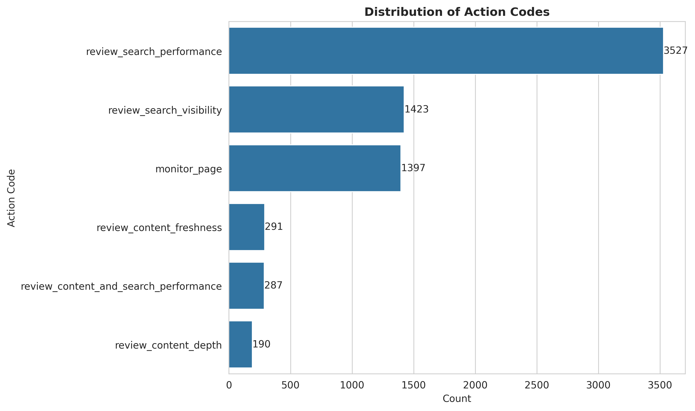

Capstone Report — Refresh / Content Opportunity
0. Abstract
This project investigates whether a machine-learning model can rank content pages by their likelihood of declining performance to help SEO teams prioritize pages for review. The analysis uses an anonymized dataset containing 30,000 content pages across 32 pseudonymized clients, with one observation per page. A Random Forest model is compared with a transparent rule-based baseline using a client-grouped holdout split to evaluate performance on unseen clients. The Random Forest achieved a Precision@50 of 0.680 and ROC-AUC of 0.600, compared with 0.500 and 0.504 for the baseline; 34 of its 50 highest-ranked pages were labeled as declining, compared with 25 for the baseline. The output is a ranked review queue with reason codes and suggested actions to support human decision-making, not an automated decision to refresh a page.
1. Problem framing
SEO teams manage many content pages, and reviewing every page with the same level of attention is inefficient. This project explores whether machine learning can help prioritize which pages an editor should investigate first. The unit of analysis is an individual content page, and the output is a ranked queue containing a model score, a reason code, and a suggested action. A FlyRank editor can use this information to investigate a page's performance and context before deciding whether to refresh, expand, protect, monitor, or take another action. A wrong recommendation could waste editorial time on a page that does not need intervention, while a genuinely underperforming page ranked too low might receive attention later. The model's score is therefore a prioritization signal, not proof that a page is declining or that refreshing it will improve performance. Machine learning provides a way to combine multiple signals and rank pages consistently, while the rule-based baseline offers a simpler reference point for evaluating whether the model adds value.
2. Data safety
The project uses the FlyRank ML starter dataset, containing 30,000 rows across 32 pseudonymized clients. Each row represents a single content page with performance, content, search, and freshness features. No client-identifying information appears anywhere in the work/ directory. The pseudonymous client_id is used only to group data during training and evaluation and is excluded from the model features. The content_id is also excluded because it serves as an identifier rather than a predictive feature. To reduce target leakage, trend_direction, trend_pct, and is_declining are excluded from the model's input features. Recent 30-day performance columns are also excluded from the current feature set.
3. Baseline
The project establishes a transparent rule-based score before evaluating the Random Forest. The baseline prioritizes pages using three signals: staleness (whether the page has not been updated for at least 91 days), visibility (at least 500 impressions in the available 90-day window), and the CTR gap (the difference between the page's observed CTR and the median CTR for its position tier, with negative gaps clipped to zero). The score combines staleness, normalized impressions, and the positive CTR gap. Expected CTR values are calculated from training data, using pages with valid average-position data and at least 500 impressions. The same evaluation split and Precision@50 and ROC-AUC metrics are used for the baseline and the Random Forest.
On the client-grouped holdout test set, the baseline achieved a Precision@50 of 0.500 and a ROC-AUC of 0.504. Of the 50 highest-ranked pages, 25 were labeled as declining. These results serve as a reference for comparing the baseline's performance with the Random Forest model.
4. Model / analysis
Model choice
A Random Forest classifier was selected to rank content pages by their likelihood of being labeled as declining. Its predicted probabilities generate a prioritized review queue rather than automatic refresh decisions.
Target and features
The target, is_declining, is 1 when trend_direction is "down" and 0 otherwise. Features cover search performance, traffic, engagement, content characteristics, freshness, search demand, and competition.
To reduce target leakage, trend_direction, trend_pct, is_declining, and the recent 30-day performance columns are excluded. content_id and client_id are also excluded from model features; client_id is used only for grouped evaluation.
Model configuration
n_estimators=300max_depth=20min_samples_split=15min_samples_leaf=8class_weight="balanced"random_state=42n_jobs=-1
Missing numerical values are imputed with 0, missing categorical values with "missing", and categorical features are one-hot encoded using handle_unknown="ignore".
5. Evaluation
The models were evaluated using GroupShuffleSplit (test_size=0.25, random_state=42), grouping by client_id. The holdout set contained 7,115 pages from 8 unseen clients. This tests generalization across clients, not future time periods.
Both models were evaluated on the same holdout set. The figure below compares the baseline and Random Forest results.

The Random Forest outperformed the baseline on both metrics. Its top 50 included 34 declining-labeled pages, compared with 25 for the baseline. Its Precision@50 of 68.0% also exceeded the test set's overall decline-label rate of 51.7%. ROC-AUC increased from 0.504 to 0.600, indicating improved discrimination on this holdout set.
6. Interpretation
The Random Forest model's most important feature was days_with_impressions (0.0408), followed by impressions_90d (0.0115) and avg_position (0.0081). This suggests that search visibility and activity contributed more to the model's predictions than engagement metrics such as scroll_rate.
Feature importance does not establish causation, and the ROC-AUC of 0.600 indicates that the model's ability to distinguish between pages with and without the decline label remains modest.
7. Recommendation
The output should be used as a human-reviewed prioritization queue, not as an automatic content-refresh decision.
The reason codes and suggested actions help FlyRank editors investigate highly ranked pages:
| Reason code | Interpretation | Suggested action |
|---|---|---|
stale_visible_low_ctr | Stale page with sufficient impressions and below-median CTR | review_content_and_search_performance |
low_ctr_for_position | CTR below the reference for its position tier | review_search_performance |
stale_visible_page | Stale page with sufficient visibility | review_content_freshness |
low_visibility | Page with low search visibility | review_search_visibility |
thin_visible_page | Visible page with relatively low word count | review_content_depth |
no_strong_signal | No specific rule was triggered | monitor_page |
Reason-code distribution across the top 50 ranked pages:

Action-code recommendations across the test set:

Editors can start with the highest-ranked pages, review their reason codes and search context, and decide whether to refresh, expand, protect, monitor, or take no action.
Confidence and limitations: The Random Forest outperformed the baseline on the client-grouped holdout set. However, future-period testing and human review are needed to determine whether the ranking improves editorial decisions or search performance.
8. Reproducibility
Clone the repository and run work/notebooks/capstone.ipynb. The notebook contains the complete project workflow, documenting each step from data preparation and methodology to model evaluation, results, limitations, and ranked recommendations.
9. Acknowledgments & data credit
This project was completed as part of the FlyRank ML Internship and was built on the FlyRank ML Internship dataset.
Data source: FlyRank